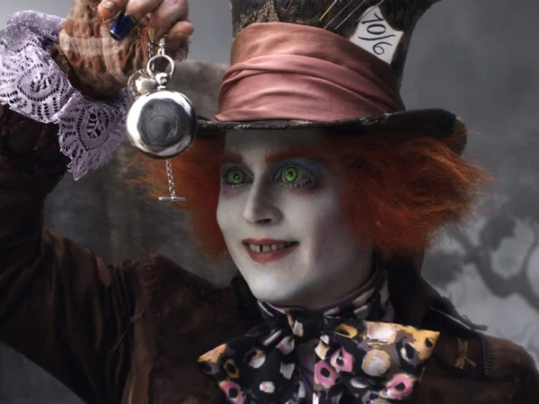
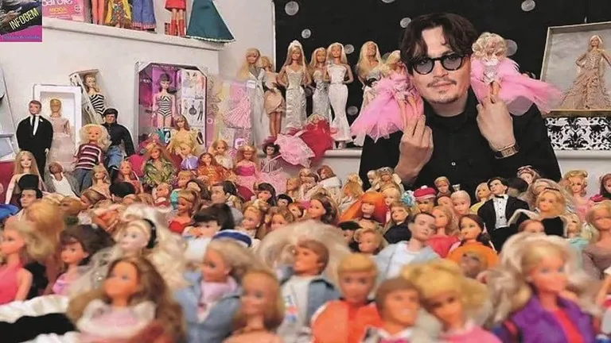

Джон Кри́стофер Депп II
Американский актёр, кинорежиссёр, музыкант, сценарист и продюсер.Дата и место рождения: 9 июня 1963 (60 лет), Оуэнсборо, Кентукки, США
Семейное положение: Лори Энн Эллисон (в разводе, нет детей), Ванесса Паради (в разводе, 2 детей), Эмбер Хёрд (в разводе, нет детей) Рост: 1,78 м
Жанры Драма, комедия, короткометражка
Всего фильмов 303, 1983 — 2023
Умения и навыкиДома у Деппа хранятся рукописи Джека Керуака, его плащ, чемодан и куртка. Кроме того, он коллекционирует картины, на которых изображены клоуны, лампы и мебель в стиле ар-деко, а также собирает скелеты голубей, жуков и летучих мышей.
Но все это не сравнится с главной страстью Деппа — коллекционированием кукол, для которых он тщательно выбирает модную одежду, мебель и аксессуары. Причем актер не мелочится. Например, для куклы Линдси Лохан он приобрел электронный браслет — миниатюрную копию того, что она носила, находясь под домашним арестом. Имеются в коллекции Деппа и куклы, которые ему особенно близки, в частности Безумный Шляпник из экранизации «Алисы в Стране чудес» и Джек Воробей из «Пиратов Карибского моря».
Самые кассовые фильмы с его участием
Пираты Карибского моря

Чарли и шоколадная фабрика

Алиса в Стране чудес